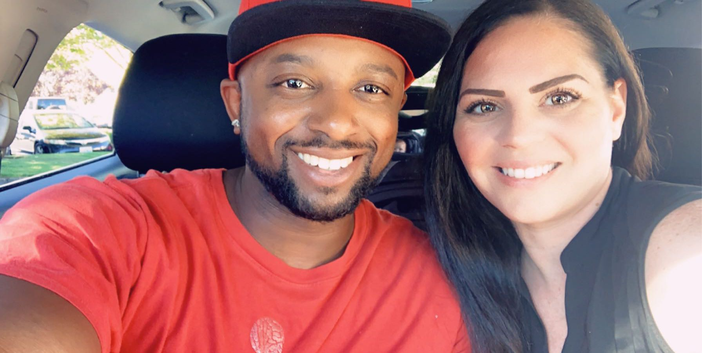

With a diverse set of life experience, I have learned to apply looking at programmatic problems with joy. I bring this enthuisiam to work with me.
Learn more
I have a passion for developing relationships with people around me and solving problems in my life.With a range of experiences and a diverse group of family, friends, and community I have learned to apply my unique ability to solve problems to solve programmatic problems.I will bring with me the ability to think outside of the box and apply technical skills that I have developed.

Design and Sports.
Designing has always had a place in my life since I was a young man and sports too. Those two activities speak to my creativity and drive.
This magizine cover was my first magazine cover, using Adobe Photoshop.Although I no longer play too many sports, I still am motivated to succeed at what I'm doing. I learn about myself as a designer each time I design a block of code, website, or any thing progamatic. As an artise, I love to work with other developers. I am often provided the plearsure of learning a new way to consider something I am doing and discover an appreciation for how other developers are achieving programmatic success.